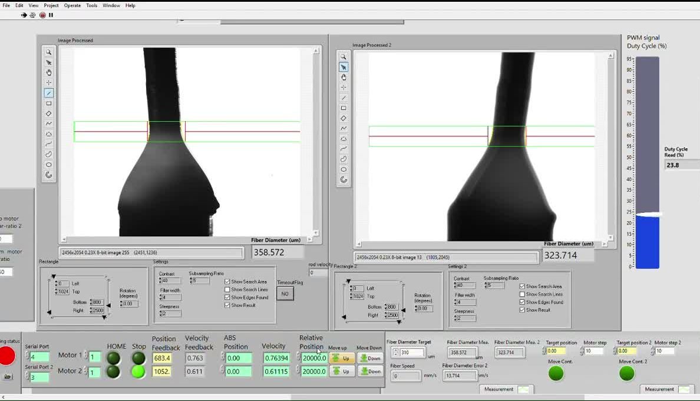
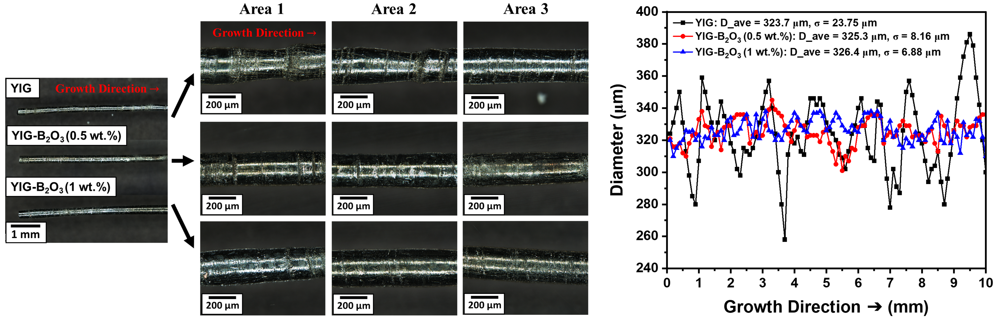
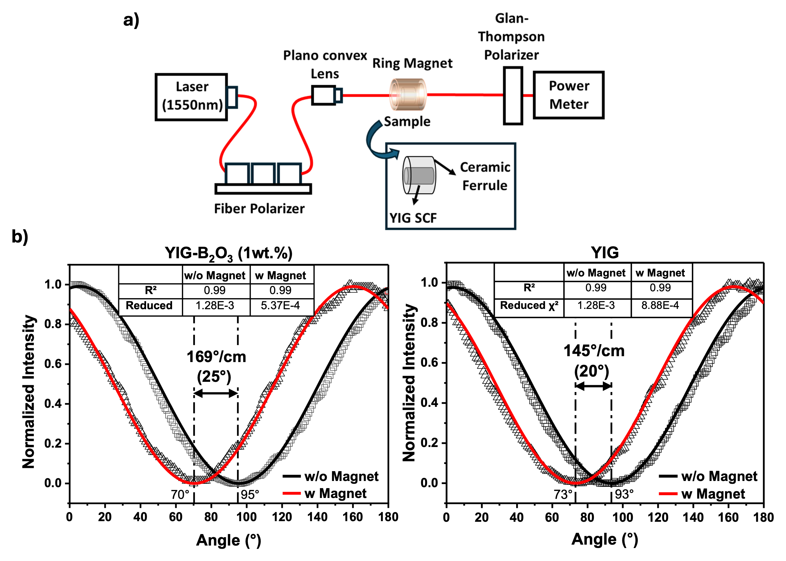

Project
Laser-Heated Pedestal Growth of Single-Crystal Fibers for Magnetic Field Sensing
We grow magneto-optic yttrium iron garnet single-crystal fibers and develop them into compact fiber-optic magnetic field sensors.
Ongoing

Project
We grow magneto-optic yttrium iron garnet single-crystal fibers and develop them into compact fiber-optic magnetic field sensors.
Ongoing
Measuring magnetic fields near high-voltage equipment and power electronics is challenging for conventional electrical sensors, which are affected by electromagnetic interference and require electrical connections at the measurement point. Optical fiber sensors avoid these limitations because the signal is carried by light, providing electrical isolation and remote readout.
Our research uses yttrium iron garnet (YIG), a magneto-optic crystal that rotates the polarization of light in proportion to the magnetic field along its path. We grow YIG as thin single-crystal fibers using laser-heated pedestal growth, in which a focused laser melts the tip of a source rod and a crystal fiber is drawn from the molten zone. These fibers are then integrated with standard optical fibers to form compact sensor heads for magnetic field measurement.
Yttrium iron garnet (YIG) single-crystal fibers are grown by laser-heated pedestal growth (LHPG), a crucible-free method in which a focused CO2 laser melts the tip of a sintered source rod and a fiber is pulled from the molten zone. Because YIG melts incongruently, conventional growth is prone to secondary phases and unstable melt zones. We introduced B2O3 as a lead-free fluxing agent, which lowers the solidus temperature and the laser power required for a stable molten zone, and reduces the estimated melt viscosity, while closed-loop control of the laser power based on real-time diameter measurements stabilizes the molten zone, with a target fiber diameter of approximately 330 µm.
Structural characterization by electron backscatter diffraction (EBSD) and single-crystal X-ray diffraction shows a transition from polycrystalline to single-crystal behavior with improved alignment along the [111] growth direction, without altering the garnet structure. Vibrating sample magnetometry shows an increase in saturation magnetization, and three-dimensional anisotropy energy modeling based on EBSD-derived crystal orientations links the improved crystallographic alignment to the magnetic response. Faraday rotation measurements show a rotation angle closer to reported values for high-quality YIG.
Building on these fibers, we demonstrated an optical-fiber-coupled YIG single-crystal fiber magneto-optic sensor for DC and 60 Hz AC magnetic field readout. Current work examines how light propagation within the crystal fiber affects the polarization signal, with the goal of establishing design guidelines for compact magneto-optic fiber probes.



This material is based upon work supported by the U.S. Department of Energy's Office of Energy Efficiency and Renewable Energy (EERE) under the Solar Energy Technologies Office Award Number DE-EE0009632.